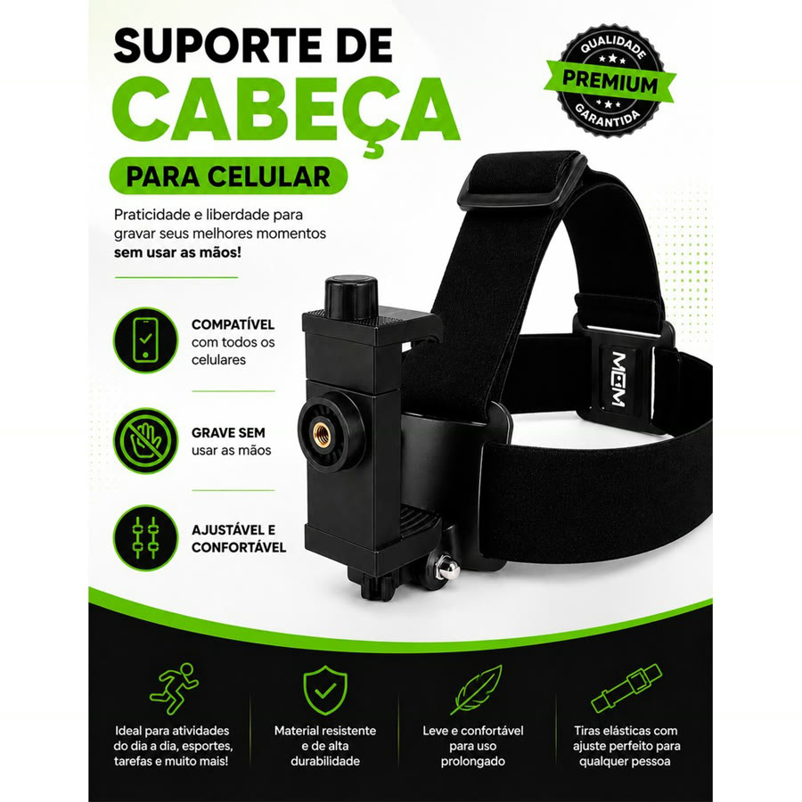
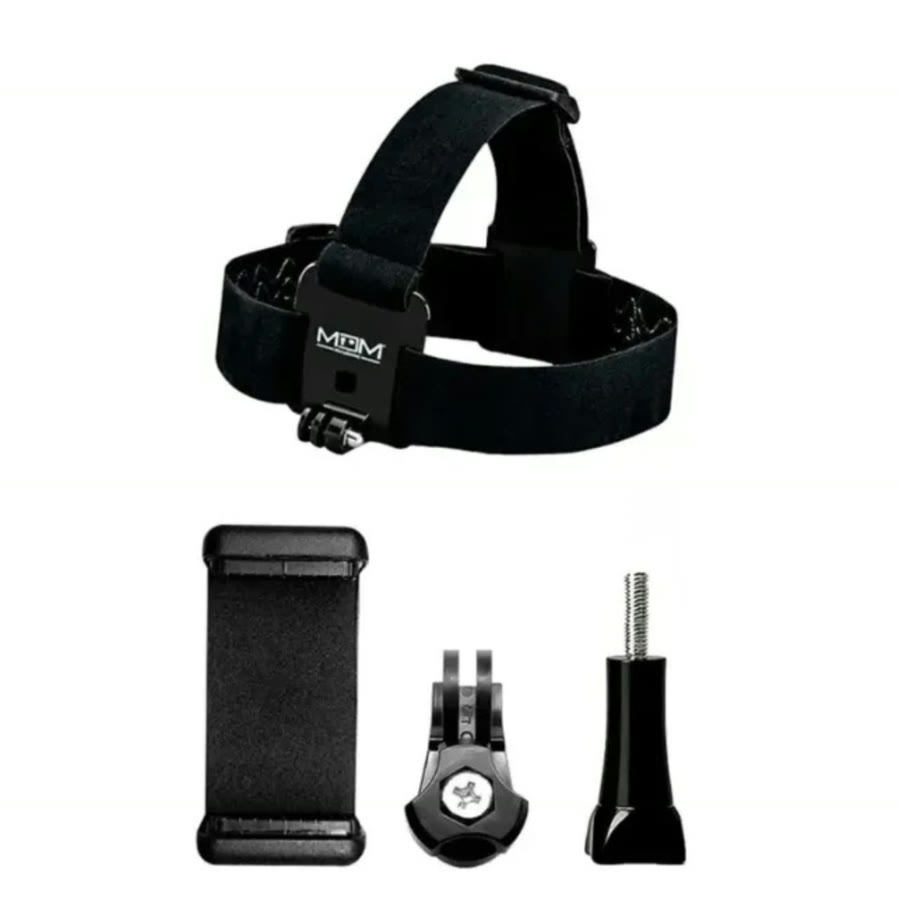
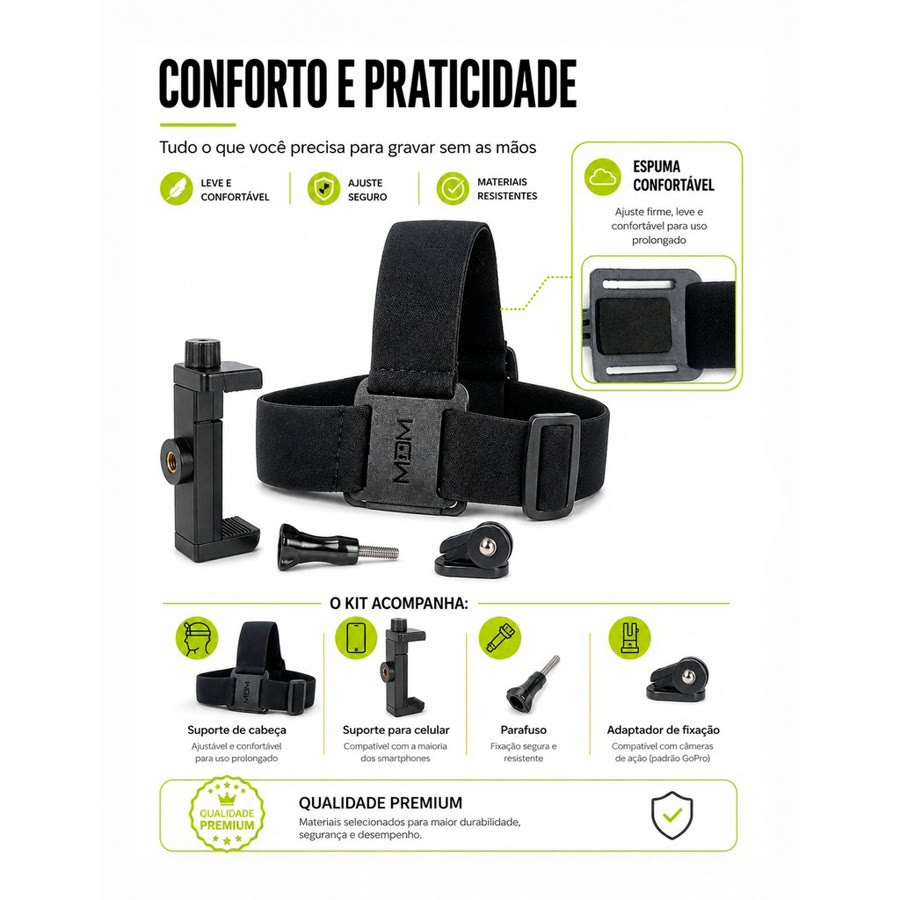
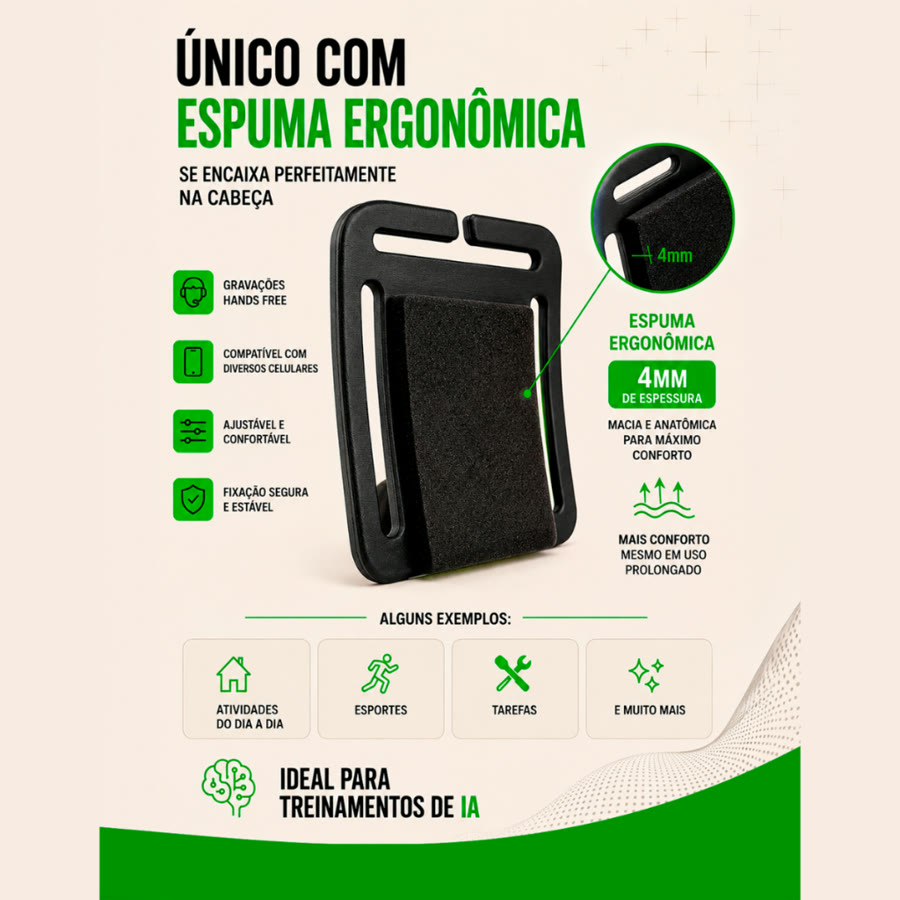

Achado nº 110
Mexer a panela e filmar com a outra mão?
Suporte de cabeça para gravar vídeo em primeira pessoa
★ 4,8 · mais de 800 avaliações na Shopee




O que diz a página oficial do produto
- É uma faixa elástica de cabeça com um suporte de celular na frente, para gravar vídeo do ponto de vista de quem está usando
- Segundo o anúncio, o celular pode ficar na horizontal ou na vertical
- Segundo o anúncio, a faixa é ajustável e pode ir por cima de boné ou capacete
- Pelas fotos, vêm a faixa de cabeça, o suporte de celular, um parafuso e um adaptador de fixação
- Pelas fotos, a faixa tem uma espuma na parte da testa
- O anúncio avisa que não é indicado para esportes radicais nem atividades de alto impacto
- Na Shopee, tem nota 4,8 com mais de 800 avaliações
Link de afiliado: se você comprar por ele, a Achadaria pode receber uma comissão, sem custo extra para você. Preço, estoque e entrega são da loja e podem mudar; confira lá antes de comprar.